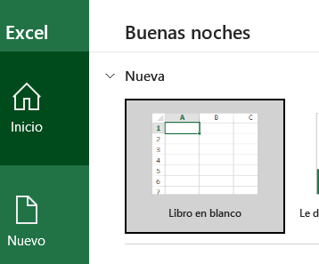
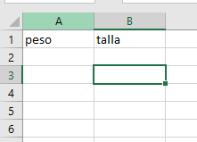
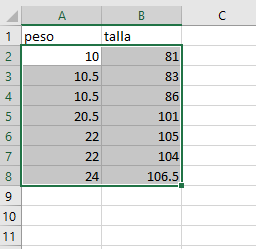
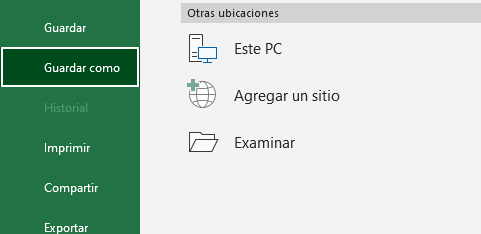
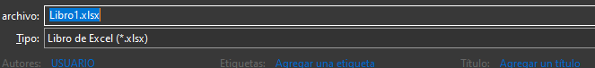
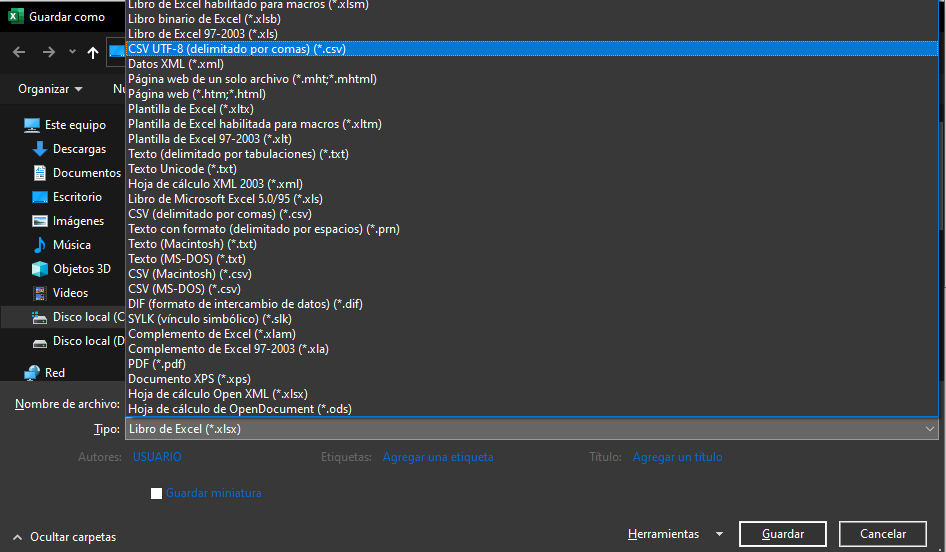

Mi Anthro es una aplicacion diseañada para profesionales nutricionistas o profesionales de la salud , con el fin de facilitar la valoracion peso para la talla en niños y niñas entre 0 y 2 años. Mi Anthro usa un modelo de machine learning entrenado , especificamente el modelo arbol de decision programado con python y la herramienta sklearn. mas informacion y el codigo aquÍ
IMPORTANTE los datos que el usuario suministre no se guardarán , por lo cual puede estar tranquilo por el tratamiento de los datos
Ojo Mi Anthro no es responsable de los datos que se le suministran , es importante que el profesional revise los datos antes de subir el documento y determine si estos son correctos.
MiAnthro funciona solo con documentos con la extension .csv y con unas caracteristicas espesificas.
para el optimo uso de la aplicacion tienes 2 opciones:
opcion 1:
Descargar el documento adjunto
opcion 2:
1.crea un documento en excel

2.poner encabezados peso y talla en ese orden

3.llenar los datos manualmente o copiar y pegar los pesos y las tallas

4.click en archivo, guardar como.

5.seleccionar el destino y poner el nombre de su preferencia

6.seleccionar el tipo de documento y dar click en CSV UTF8 (delimitado por comas)

7.guardar el documento